ArchiViz · Workshop
Segui da qui.
Apri il link o inquadra il codice. Trovi le slide e tutti i prompt da copiare.
jonathanlivingston86.github.io/archiviz-workshop
Workshop
ArchiViz
Render con l'AI, dal disegno all'immagine.
Andrea Lucarelli · ai.andrealucarelli.com
Per cominciare
Real o AI?
Due immagini. Una è una foto vera, l'altra è nata da un testo.
Alzate la mano: A o B?
Fine gioco
Non importa quale immagine sia stata generata dall'AI.
Importa che ci hai dovuto pensare.
Il confine è già scomparso. Questa era solo pratica.
01 · Inquadrature
Inquadrature cinematografiche fisse
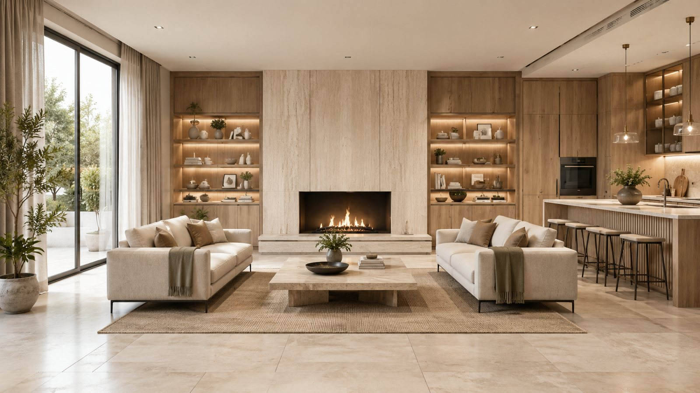
Campo totaleEstablishing shot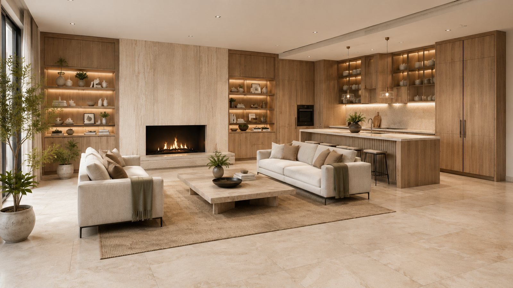
Angolo architettonicoTwo-point perspective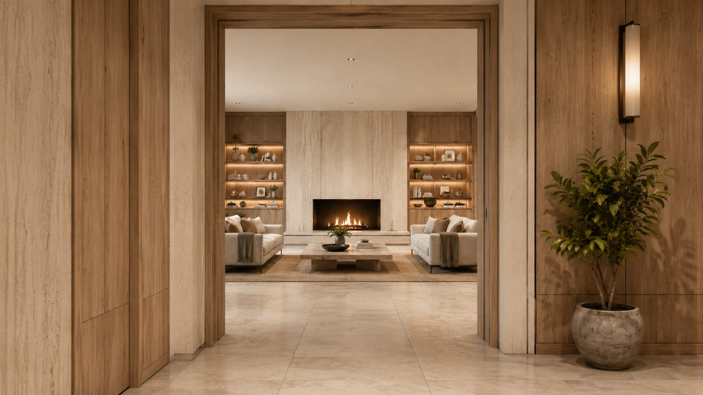
Attraverso una sogliaFramed shot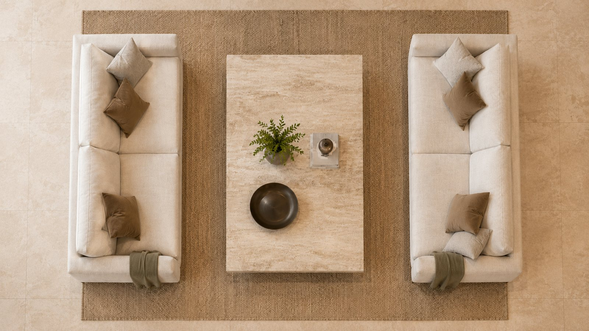
Dall'altoHigh angle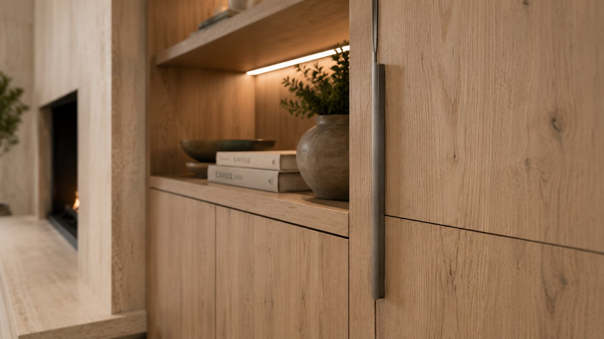
Dettaglio architettonicoClose-up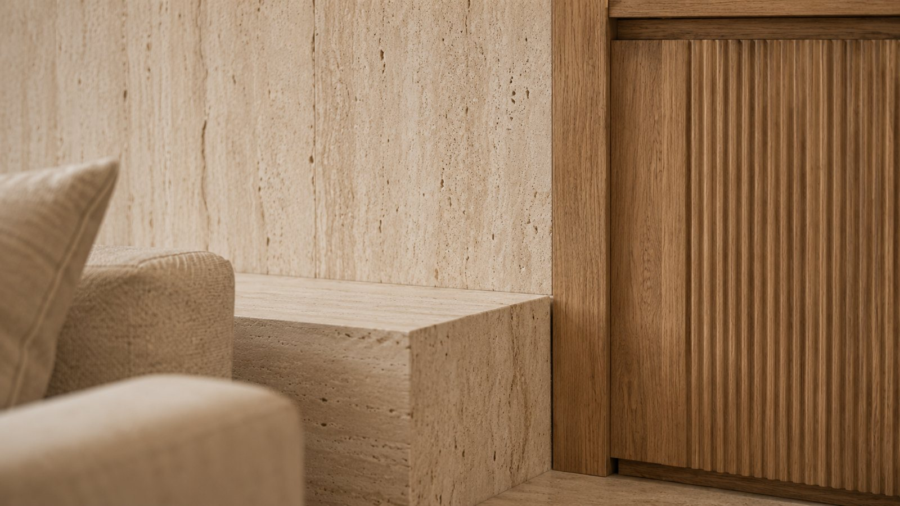
Macro materialeMacro texturePer ricordarle
Guida essenziale per fotografare e raccontare interni architettonici. I nomi in inglese servono nei prompt, sia da testo sia da immagine. Il campo totale si chiama anche hero shot, quando il soggetto principale domina la scena.
| Inquadratura | Cosa mostra | Come inquadrare | Luce |
|---|---|---|---|
| Campo totale | L'ambiente completo e la relazione tra arredi, aperture e percorsi. | Ripresa frontale o leggermente angolata, verticali dritte, spazio leggibile. | Morbida e bilanciata, per leggere volumi e profondità. |
| Angolo architettonico | Due pareti e la profondità dello spazio. | Camera vicino a un angolo, verticali dritte. | Laterale e naturale, per leggere texture e volumi. |
| Attraverso una soglia | Profondità, passaggio e relazione tra ambienti. | Porte, archi o quinte come cornice naturale. | Primo piano e fondo separati da livelli di luce chiari. |
| Dall'alto | Distribuzione degli arredi, proporzioni e flussi. | Camera sopra l'altezza degli occhi, inclinata verso il basso. | Uniforme e morbida, senza ombre invadenti. |
| Dettaglio architettonico | Materiali, finiture, giunti e dettagli costruttivi. | Il dettaglio isolato, composizione pulita, sfondo semplice. | Radente e laterale, per esaltare materia e rilievo. |
| Macro materiale | Texture, grana, venature, metalli, tessuti e superfici. | Un dettaglio preciso con profondità controllata. | Morbida, radente, senza punti troppo chiari. |
01 · Inquadrature
Dove metti la camera.
Campo totale
Establishing shot
24 mm
eye-level camera, 24-35 mm, wide interior, straight verticals
Come leggerlo
La pianta è vista dall'alto. Il cono blu è quello che la camera vede: più la focale è corta, più il cono si apre. Sotto trovi le parole da mettere nel prompt per quell'inquadratura.
01 · Inquadrature
Cinque regole, quattro focali.
- Verticali dritte.
- Niente deformazioni estreme.
- Un soggetto e un punto focale.
- Luce naturale e artificiale in equilibrio.
- Ogni immagine racconta funzione, atmosfera e materia.
| 16-24 mm | Ambienti piccoli. Con cautela. |
| 24-35 mm | Il più versatile per gli interni. |
| 50 mm | Dettagli e composizioni naturali. |
| 85-100 mm | Materiali e finiture. |
Una regola in più
Quando rigeneri un'immagine, cambia una cosa sola alla volta: l'inquadratura, la luce o il materiale. Così capisci cosa ha funzionato.
01 · Inquadrature
Prima prova, nelle chat.
ChatGPT e Gemini bastano per cominciare. Si parte da un testo, oppure da un'immagine.
Eye-level interior photograph, [SHOT], [FOCAL] lens, straight verticals. Subject: a small living room with a linen sofa and an oak table. Light: soft natural daylight from a window on the left. Materials: lime plaster walls, oak floor, brushed brass. Style: calm, editorial, architecture magazine. Mandatory: realistic proportions, coherent shadows. Forbidden: people, text, watermarks, distorted lines.
Use the attached image as the base. Render it as an eye-level editorial interior photograph, [FOCAL] lens, straight verticals. Mandatory: keep the geometry, layout and every object exactly as they are. Light: soft natural daylight, realistic materials. Forbidden: adding or removing objects, text, watermarks.
Obbligatorio e vietato: dì al modello cosa deve restare e cosa non deve comparire.
Come usarli
Sostituisci [SHOT] con il nome inglese dell'inquadratura (per esempio two-point perspective) e [FOCAL] con la focale, per esempio 28 mm. Gli altri dettagli si cambiano a piacere. Nel prompt da immagine, allega prima il disegno, il modello 3D o la foto di partenza.
Strumento
Da qui lavoriamo in VizMaker.
Un'app per computer che riunisce in un posto solo i modelli di immagine migliori: Nano Banana, Flux, Seedream, GPT. Ha una prova gratuita di 7 giorni.
Lo uso e lo insegno perché funziona. Nessuna sponsorizzazione. Il metodo vale con qualunque strumento.
Per sapere di più
Sito ufficiale: vizmaker.com. Condizioni, prezzi e modelli disponibili cambiano: controlla sempre la pagina aggiornata prima di decidere.
02 · Inpainting
Cambi solo quello che selezioni.
Un'immagine che funziona quasi.
Premi la freccia per andare avanti
In tre passi
- L'immagine di partenza va bene quasi tutta.
- Selezioni solo la parte da cambiare, qui il divano.
- Descrivi il cambiamento. Il resto dell'immagine non si tocca.
02 · Inpainting
Il prompt giusto.
Replace only the selected area with a terracotta bouclé sofa, same size and same position. Match the existing light direction and shadows. Mandatory: keep everything outside the selection unchanged. Forbidden: new objects, text, changes outside the selection.
- Seleziona un po' oltre il bordo dell'oggetto.
- Un cambiamento alla volta.
- Descrivi anche luce e ombre.
Cosa si può fare
Cambiare un materiale, togliere un oggetto, aggiungere arredi o persone, correggere un dettaglio che non convince. Per togliere qualcosa usa: Remove the selected object and fill the area with the surrounding wall and floor.
03 · Texture PBR
Una superficie reagisce alla luce.
PBR sta per rendering basato sulla fisica. Ogni materiale è fatto di più mappe: colore, rugosità, rilievo. Muovi la luce.
Le mappe
- Colore (albedo): l'aspetto del materiale, senza luce né ombre.
- Rugosità: dove è lucido e dove è opaco.
- Rilievo (altezza o profondità): le piccole sporgenze e gli incavi, come le fughe tra le piastrelle.
Il risultato è l'insieme delle mappe con una luce sopra. Muovi il mouse o il dito sull'immagine per cambiare la direzione della luce.
03 · Texture PBR
Dalla foto a una texture ripetibile.
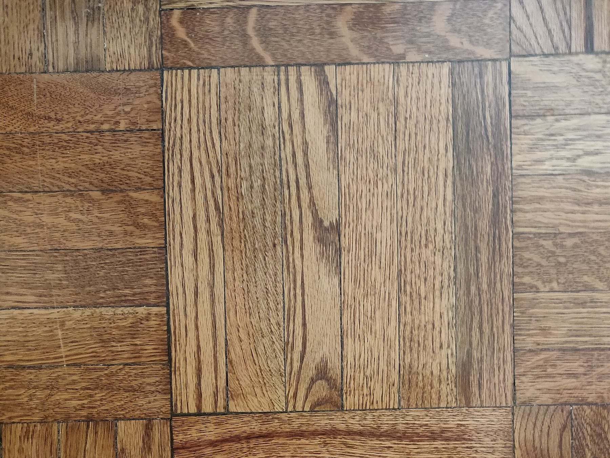

Make this a seamless, tileable albedo texture. Mandatory: flat top-down view with no perspective, remove shadows, highlights and reflections, keep the wood pattern at its real scale, square 1:1, the left edge must continue into the right edge and the top into the bottom. Forbidden: new objects, text, borders, vignette, visible seams.
- Albedo vuol dire solo colore, senza luce e ombre dentro.
- Ripeti il risultato 3 per 3 e guarda i bordi.
- Se si vede una giunta, usa il prompt di correzione nella dispensa.
Prompt di correzione (se si vede il raccordo)
Shift this texture by half its width and half its height, then repaint the visible cross in the center so the pattern is continuous. Mandatory: keep the same colors, wood scale and level of detail everywhere else. Forbidden: new objects, text, borders.
Perché funziona
- Togliere luce e ombre (in inglese de-lighting) serve perché la luce la metterà poi il programma 3D: se è già dentro la foto, si somma due volte.
- Una vista dall'alto, senza prospettiva, evita che il disegno si deformi quando la texture si ripete.
- Il formato quadrato 1:1 rende la texture facile da ripetere in tutte e due le direzioni.
La foto d'esempio è di Kurt Kaiser, rilasciata in pubblico dominio (CC0), da Wikimedia Commons.
04 · Moodboard
Dalle immagini al linguaggio.
Scegli fino a cinque materiali: a destra nasce la descrizione dello stile. Copiala e incollala nel prompt della slide dopo, al posto di [STILE].
Come si usa
- Tocca i materiali che ti piacciono: il testo a destra si compone da solo.
- Premi Copia.
- Nella slide dopo, incolla il testo nel prompt 2 al posto di [STILE] e allega la foto o il render della stanza.
Se hai una foto di riferimento che ti piace, usa il prompt 1 della slide dopo: l'AI ne estrae la moodboard in forma di testo.
04 · Moodboard
Moodboard in due passaggi.
Look at the attached image (a photo or render of an interior) and extract its moodboard. Describe in English: the palette with hex codes, the main materials and finishes, the furniture and accessories (type, shape, material), the quality of light, and the mood in five keywords. Then write one reusable prompt that captures this style. Forbidden: generic words like beautiful or elegant, and anything that is not visible in the image.
Edit the attached image of the room, restyling it with this moodboard: [STILE]. Mandatory: keep the geometry, the camera, the layout and the position of every element. Change only palette, materials, finishes, furniture style, accessories and the mood of the light. Forbidden: moving walls or openings, adding text, any color or material not in the moodboard.
Nel prompt 1 allega un'immagine di riferimento: ne esce la moodboard scritta. Nel prompt 2 allega la foto o il render della stanza da modificare e incolla la moodboard al posto di [STILE]. Va bene anche il testo della slide prima.
05 · Upscale
Più pixel, nuovi dettagli.
L'upscale aumenta la risoluzione. Il modello inventa i dettagli che mancano.
Illustrazione. Trascina la barra.
05 · Upscale
Quando farlo.
- Alla fine, su un'immagine già approvata.
- Prima di stampare o di mandarla al cliente.
- Poi controlla linee, scritte e texture: i dettagli inventati possono sbagliare.
Nota
Un upscale ricostruisce i dettagli, non li recupera. Se un'immagine nasce con un errore di geometria, l'upscale lo rende più nitido. Correggi prima, ingrandisci dopo. VizMaker dichiara una generazione nativa in 4K e un upscale fino a 8K.
06 · Da 3D a render
Dal modello al render.
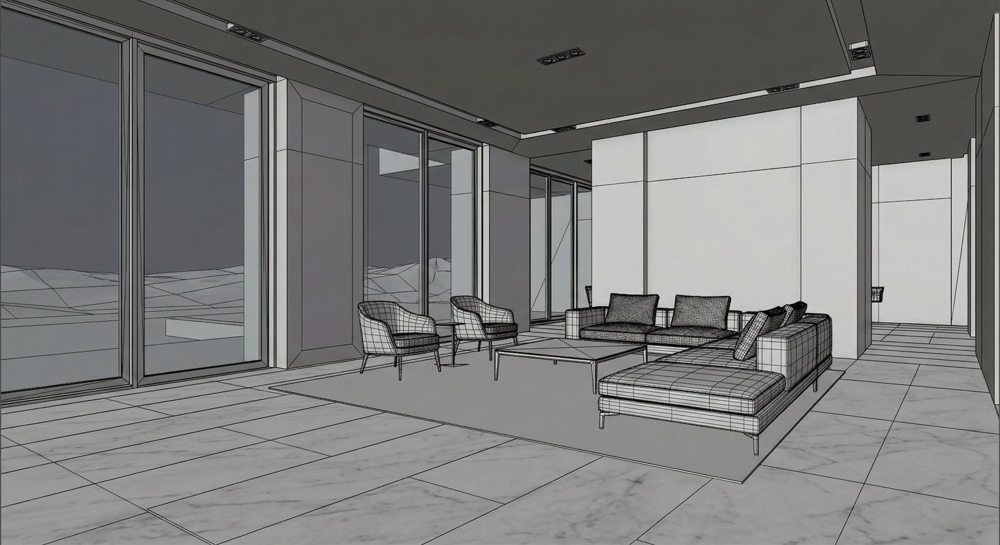
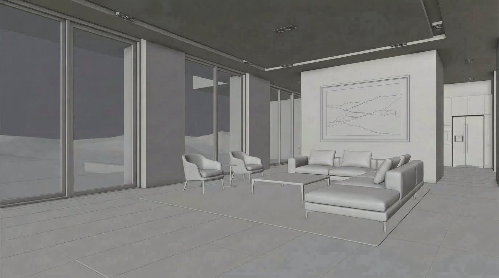
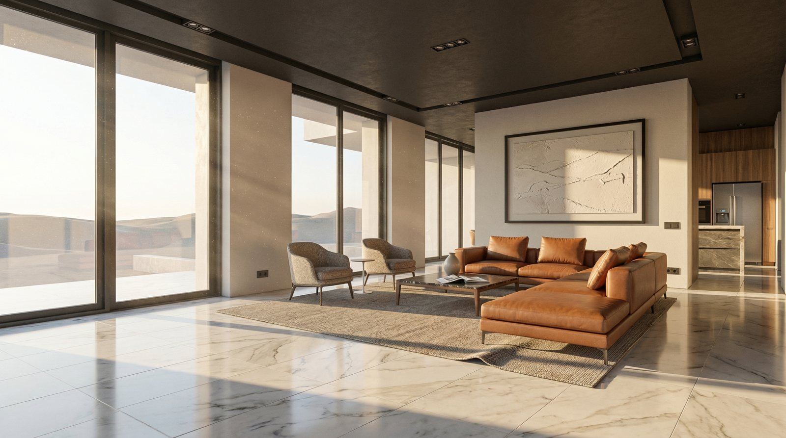
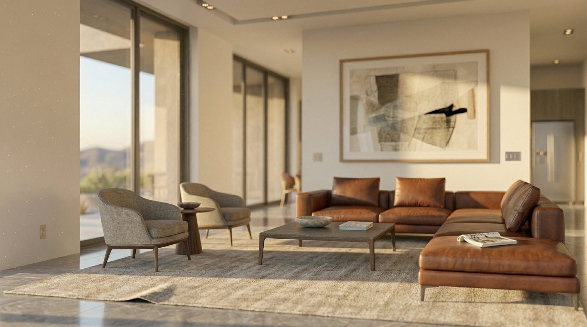
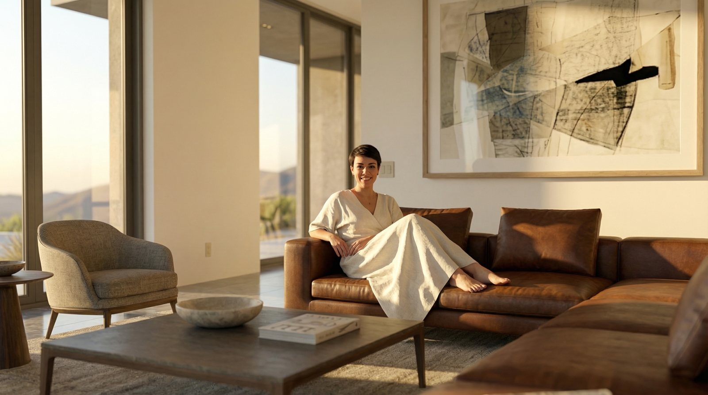
Prompt del passaggio 3
Render this clay model photorealistically. Mandatory: do not modify the geometry, keep the camera, the layout and every object in place. Apply realistic materials and warm sunlight from the left. Forbidden: new furniture, text, watermarks.
07 · Agentic 3D
Dal 2D al modello 3D.
Descrivi la stanza a parole, oppure dagli una pianta o uno schizzo. L'agente costruisce il modello in SketchUp e controlla le norme.
Per i render usa Blender: è gratuito e open source, cioè il suo codice è pubblico e lo usi senza pagare.
Licenza di Agentic 3D: uso gratuito, anche per lavoro, e quello che crei è tuo. Non si può rivendere né ridistribuire.
Installa Agentic 3D. Scarica lo ZIP dell'ultima versione da https://github.com/JonathanLivingston86/agentic-3d/releases/latest, estrailo e segui il file componenti/INSTALLA.md. Alla fine lancia agentic3d verifica e dimmi il risultato in parole semplici.
github.com/JonathanLivingston86/agentic-3d
- Scarica lo ZIP dall'ultima versione ed estrailo.
- Windows: doppio clic su Installa.cmd. Mac: Installa.command.
- Riavvia SketchUp e il tuo agente, poi scrivi /agentic3d.
Licenza
Si può usare anche a fini professionali, su tutti i computer che hai, e si può leggere e modificare il codice per uso interno. Modelli, render e rapporti appartengono a chi li produce. Non è consentito rivendere, noleggiare o ridistribuire il software. Il software è fornito senza garanzie e senza assistenza. Il testo completo è nel file Licenza.md dentro lo ZIP.
Cosa serve
Windows 10 o 11, oppure macOS 13 o successivo. SketchUp desktop 2021 o più recente. Un agente a tua scelta. Blender solo se vuoi i render. Non servono diritti di amministratore.
Il primo lavoro
Dopo il riavvio scrivi al tuo agente, per esempio: /agentic3d crea un nuovo lavoro "Prova" con un appartamento di esempio. In SketchUp scegli Estensioni, Agentic 3D, Collega modello e apri il file indicato dall'agente: da lì ogni modifica compare da sola.
Pagina del progetto e ultima versione: github.com/JonathanLivingston86/agentic-3d.
07 · Agentic 3D
Cosa fa e a chi serve.
Gli dai
Ottieni
A chi serve
A chi non ha un modellatore 3D in studio.
A chi deve controllare altezze, superfici e porte senza rileggere i decreti.
A chi vuole arrivare al render da una pianta, senza ridisegnare tutto.
Prova reale: un appartamento da pianta DXF a modello in SketchUp in 11 minuti. Il DWG non si legge: salvalo prima come DXF.
07 · Agentic 3D
Come funziona.
Tu chiedi in italiano.
Il percorso
- Tu chiedi in italiano: un brief, una pianta o uno schizzo.
- L'agente AI è quello che già usi (Claude, Codex, Gemini, Cursor, Copilot, OpenCode). La Skill è il manuale di mestiere che gli spiega come si modella un interno.
- Il server MCP (Model Context Protocol) gli dà gli attrezzi: costruire, controllare, aggiornare.
- Il motore scrive la scheda del progetto e la controlla con le regole e le norme (DM 5 luglio 1975, DM 236/1989).
- Il modello compare dal vivo in SketchUp. Il file GLB si guarda su telefono e visori. Blender fa i render e una galleria che si aggiorna da sola.
- SketchUp scrive un rapporto di controllo: l'agente lo rilegge e corregge.
07 · Agentic 3D
Porta il tuo agente.
Il tuo assistente AI
Non devi imparare un programma nuovo: usi l'assistente AI che hai già (Claude, Codex, Gemini, Cursor, Copilot, OpenCode). Agentic 3D gli dà gli strumenti per modellare. In inglese: BYOA, Bring Your Own Agent.
Le norme, con l'articolo
Mentre costruisce, il motore controlla il progetto. Una camera doppia sotto i 14 m² viene segnalata con l'articolo del DM 5 luglio 1975 (art. 2). Una porta interna con meno di 75 cm di luce, con il DM 236/1989 (art. 8).
La firma resta tua
Il controllo ti avvisa, non decide al posto tuo. La responsabilità del progetto resta del tecnico abilitato.
Nota
Le regole sono scritte in file di dati: ciascuna riporta la fonte, l'articolo e l'estratto del testo di legge. Se un dato manca, il controllo risponde "non verificabile" invece di inventare un esito.
08 · AI Act e dintorni
L'AI Act in breve.
Cos'è
Il Regolamento (UE) 2024/1689: la prima legge europea generale sull'intelligenza artificiale. Vale in tutti i paesi dell'Unione.
Perché
Proteggere salute, sicurezza e diritti delle persone e dare regole comuni al mercato, senza fermare l'innovazione.
Cosa fa
Divide le applicazioni per rischio: alcune sono vietate, quelle ad alto rischio hanno regole severe, le altre hanno obblighi di trasparenza o nessun obbligo.
- 1 agosto 2024entra in vigore
- 2 febbraio 2025divieti e competenze AI (art. 4)
- 2 agosto 2025regole per i modelli di uso generale
- 2 agosto 2026quasi tutto il resto, trasparenza compresa (art. 50)
- 2 dicembre 2027alto rischio, rinviato dal 2026 (prodotti: 2 agosto 2028)
Per chi lavora in uno studio
Sei un utilizzatore (in inglese deployer): usi sistemi di AI fatti da altri.
Ti riguardano soprattutto due cose: le competenze AI di chi lavora con te (art. 4) e dichiarare i contenuti generati che sembrano veri (art. 50).
Render, testi e ricerche rientrano di norma nei rischi bassi. Gli obblighi più pesanti sono di chi produce i sistemi.
Dettagli e fonti
- Regolamento (UE) 2024/1689, pubblicato nella Gazzetta ufficiale dell'UE il 12 luglio 2024, in vigore dal 1 agosto 2024. Si applica dal 2 agosto 2026, con eccezioni: capi I e II dal 2 febbraio 2025, modelli di uso generale e governance dal 2 agosto 2025.
- L'articolo 4 (competenze in materia di AI) è stato riscritto dal Regolamento (UE) 2026/1744: oggi chiede a chi usa sistemi di AI di adottare misure per sviluppare le competenze di chi ci lavora, non più di garantirle.
- Il Regolamento (UE) 2026/1744 ha rinviato gli obblighi per i sistemi ad alto rischio dell'allegato III al 2 dicembre 2027 e quelli dei prodotti regolati (allegato I) al 2 agosto 2028.
- Il testo ufficiale è su EUR-Lex. Questo materiale non è un parere legale.
08 · AI Act e dintorni
Tre domande prima di usare l'AI.
L'hai detto?
Dal 10 ottobre 2025, chi esercita una professione intellettuale deve informare il cliente, con parole chiare, sui sistemi di AI che usa. Legge 132/2025, art. 13.
Consegni tre render fatti con l'AI. Nel tuo disciplinare d'incarico c'è scritto?
Aggiungi una riga: «Per questo incarico uso strumenti di AI per i render. Le scelte di progetto e la verifica sono mie.»
Dove finiscono i suoi file?
Piante, foto della casa e dati catastali permettono di riconoscere il cliente: sono dati personali. Caricarli in un servizio di AI vuol dire affidarli a un'altra azienda. GDPR, Regolamento (UE) 2016/679.
Carichi la pianta, con nome e indirizzo, nella versione gratuita di un chatbot. Sai se può usarla per addestrare il modello?
Togli nome e indirizzo prima di caricare e controlla nelle impostazioni che i tuoi dati non servano all'addestramento.
Il progetto è tuo?
Il diritto d'autore protegge le opere dell'ingegno umano, anche se fatte con l'AI, purché siano il risultato del lavoro intellettuale dell'autore. Legge 132/2025, art. 25.
Un collega riusa per un altro cliente il tuo progetto, scritto e disegnato con l'AI. Puoi dimostrare che è tuo?
Conserva schizzi, prompt, versioni e correzioni: sono la prova del tuo lavoro.
08 · AI Act e dintorni
Cosa puoi sistemare già domani.
- Aggiungi al disciplinare d'incarico una riga sull'uso dell'AI.
- Prima di caricare un file del cliente, togli nome e indirizzo e controlla le impostazioni di privacy.
- Salva schizzi, prompt e versioni di ogni lavoro.
- Sotto le immagini generate che pubblichi e che sembrano vere, scrivi «Immagine generata con AI».
L'AI non è uno scherzo e le regole ci sono già. Se vuoi scrivere insieme la clausola o rivedere come lavora il tuo studio, scrivimi: ai.andrealucarelli.com.
Informazione generale, non parere legale. Le norme cambiano: le fonti sono nella dispensa.
Fonti consultate
- Regolamento (UE) 2024/1689 (AI Act), art. 50, obblighi di trasparenza.
- Legge 23 settembre 2025, n. 132, art. 13 (professioni intellettuali) e art. 25 (diritto d'autore), in vigore dal 10 ottobre 2025.
- Regolamento (UE) 2026/1744 dell'8 luglio 2026 (Gazzetta ufficiale UE del 24 luglio 2026), che ha modificato l'AI Act.
- Regolamento (UE) 2016/679 (GDPR), sulla protezione dei dati personali.
L'obbligo di dichiarare le immagini che sembrano autentiche (art. 50, paragrafo 4) si applica dal 2 agosto 2026. Per chi produce i sistemi di AI, la marcatura leggibile dalle macchine (art. 50, paragrafo 2) ha un periodo transitorio fino al 2 dicembre 2026, solo per i sistemi già sul mercato prima del 2 agosto 2026. Controlla sempre il calendario aggiornato su fonti ufficiali. Questo materiale non è un parere legale.
Prossimi passi
Tre cose da fare questa settimana.
- Prendi un tuo progetto e prova le sei inquadrature.
- Costruisci un moodboard e rigenera la stessa scena.
- Scrivi due righe sull'uso dell'AI nel tuo disciplinare d'incarico.
Scegli quella che ti sembra più alla portata. Una sola, ma falla davvero.
Grazie.
Domande, dubbi, progetti da guardare insieme.
jonathanlivingston86.github.io/archiviz-workshop
Andrea Lucarelli · ai.andrealucarelli.com